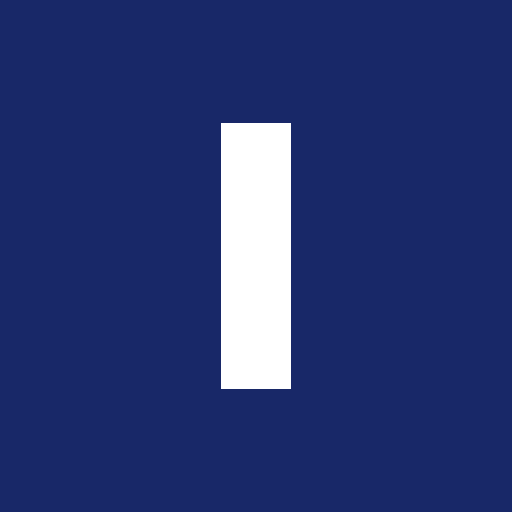

04 · Aplicações reduzidas


Favicon, avatar e ícone
O símbolo funciona sozinho, sem o logotipo, em qualquer aplicação pequena ou quadrada. É a versão para foto de perfil de WhatsApp, avatar de rede social, favicon e ícone de aplicativo.
32 pxfavicon
180 pxícone iOS
640 pxavatar WhatsApp

512 pxícone de app
Sobre o recorte circular: WhatsApp e algumas redes cortam o avatar em círculo. O símbolo aguenta o corte porque a haste ocupa só 13,3% da largura e fica no centro — o círculo come apenas os cantos do quadrado. Nunca envie um avatar com o logotipo completo: a escrita fica ilegível.